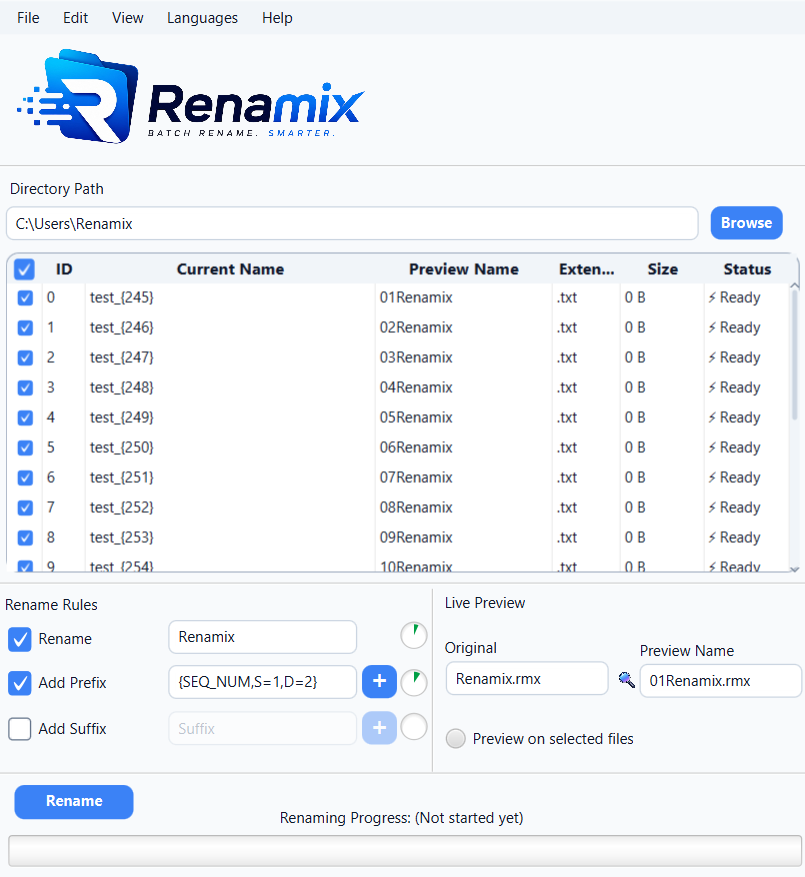
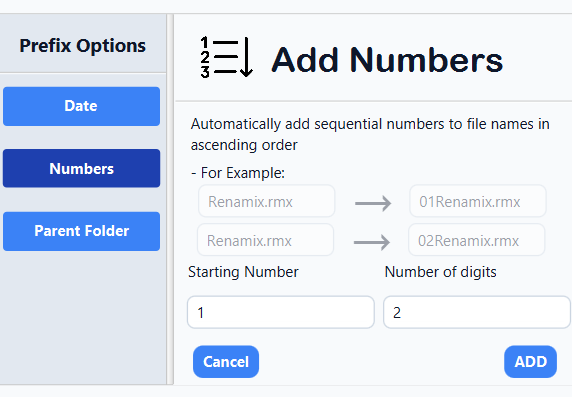

Live Preview
See the exact new filename for every file before you rename anything.
A clearer way to rename files
Renamix is a powerful desktop application for batch renaming files with live previews, flexible rules, and undo/redo.
Renamix — $5 USD • Desktop application

A focused tool for focused work
Renamix turns a repetitive task into a clear, controlled workflow. Select your files, combine the rules you need, preview the result, and rename with confidence.
It stays fast and responsive across thousands of files in a single folder, with undo and redo when you need to make a change.

The essentials
See the exact new filename for every file before you rename anything.
Stack multiple rules together and apply them to a selection in one operation.
Built to stay fast and responsive across thousands of files in a single folder.
Revert a batch rename back to the original names, or redo it again.
Everything you need
Every Renamix feature is designed to make a batch rename easier to understand before you apply it.
See the exact new filename for every file before you rename anything — no guessing, no surprises.
Stack multiple rules together and apply them all to a selection in a single operation.
Number files automatically as part of a rule — with control over start value, step, and digit padding.
Stamp every filename with a date, pulled from the file itself or today's date, added to the start or end.
Pull the containing folder's name straight into the filename, added to the start or end.
Add text to the start or end of filenames across an entire selection in one pass.
Made a mistake, or changed your mind? Revert a batch rename back to the original names.
Redo a batch rename after undoing it.
Built to stay fast and responsive across thousands of files in a single folder.
A simple process
Inside Renamix
Explore the focused interface behind the workflow. Click any view to see it larger.
Made to be understood
Watch the workflow
See how Renamix brings clarity to batch file renaming.
Need a hand?
Have feedback or found something that needs attention? Reach out directly.
Ready when you are
Get Renamix for $5 and make batch file renaming faster, clearer, and easier.
Get Renamix — $5